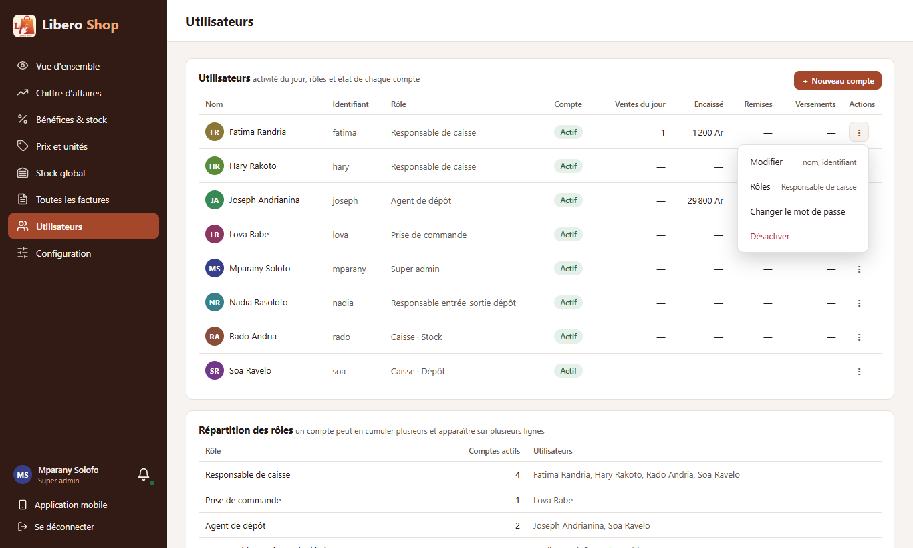
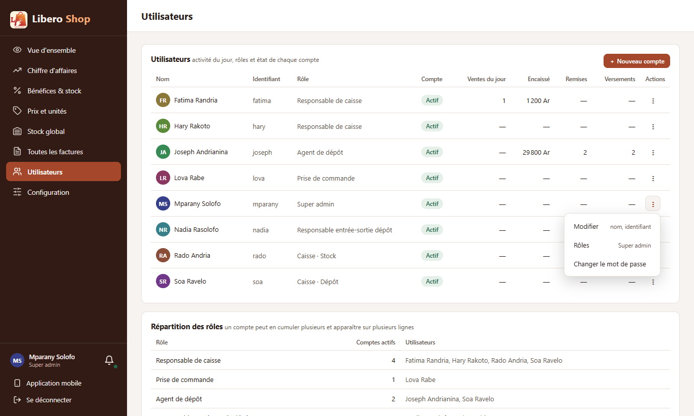

← Tous les comptes rendus de l'interface
UI-70Le menu des utilisateurs
Résumé
- Les trois boutons de chaque compte (Modifier, Mot de passe, Désactiver) deviennent un « ⋮ » : Modifier, Rôles, Changer le mot de passe, Désactiver ou Réactiver.
- Un petit texte gris à droite dit ce qu'on va changer : « nom, identifiant », ou les rôles actuels.
- « Désactiver » est en rouge et passe par la confirmation mise en place avec UI-82.
- Son propre compte n'a pas d'entrée « Désactiver » (avant, un bouton grisé).
1. Ce qui a été fait
Chaque ligne de la liste des comptes portait trois boutons, ce qui élargissait le tableau. Ils sont remplacés par le même menu « ⋮ » que les produits, les fournisseurs et les rayons : une seule façon de faire dans toute l'application. Les fenêtres derrière chaque entrée n'ont pas changé ; « Rôles » ouvre la fiche du compte, où se trouvent les rôles.
Figure 1 — Trois boutons remplacés par le menu commun à toute l'application.
2. Le résultat en images
Mparany — administrateur

Figure 2 — Le menu du compte de Fatima, ses rôles affichés à droite.

Figure 3 — Sur son propre compte, pas de « Désactiver ».
3. Tableau récapitulatif
| Fichier | Changement |
|---|---|
ui/…/features/admin/users.component.ts | « ⋮ » par compte à la place des trois boutons |
ui/…/features/admin/users-menu.spec.ts | nouveau : tests du menu |
| Règle | Test |
|---|---|
| Désactiver un autre compte, jamais le sien | users-menu.spec.ts |
| Un compte désactivé propose « Réactiver » | users-menu.spec.ts |
Tests : interface au vert (277 tests). Aucun changement côté serveur.